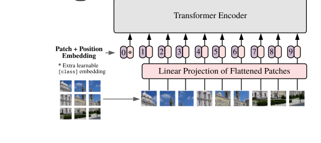

A chatbot slices your photo into a few hundred squares and turns each into a word
To read it, the model maps each square to a vector in the same space as its words, then lets your question read across the grid.
Why this matters
You paste a photo into a chatbot and ask what is in it, and it answers as if it looked. It did not look, not the way you do. Taking images is now the default in consumer chatbots, and this course has shown how a model turns a word into a vector and how one word's vector reaches across a sentence to another. What it has never shown is how a picture gets into that stream at all. This lesson is that missing step. Walk down it and you can trace the whole path from your pasted photo to the answer. You will see how the image becomes a few hundred vectors and how your question reads them. You will see why the model can miscount the objects in a picture and misread small print while sounding sure. And you will learn to tell a real account of that failure from one that skips a rung.
- 01
- A transformer redraws a word's vector for every sentence it appears in: the space of meaning-vectors this lesson drops image patches into.
- 02
- An attention head is a weighted average that computes its own weights: the step your question uses to read the image patches.
The photo has to become tokens first
Start at the behavior and go down. You drop a photo into the chat box, type "what's in this?", and a sentence comes back naming the dog and the porch. The obvious guess is that the model opened the picture and looked at it. It did not, because it has nothing to look with. A language model takes in one kind of thing: tokens, the little chunks of text it turns into vectors and passes through its layers. So before it can say a word about your photo, the photo has to become the same kind of thing a word is.
That is exactly the move a 2020 paper made, and its title says the trick out loud: an image is worth sixteen-by-sixteen words. The Vision Transformer reshapes a picture into a sequence of small flattened patches and feeds them to a plain transformer, the kind built for text.1 Everything below follows from that one decision. Take it a rung at a time, marking each as solid engineering or a question the people who build these systems still cannot answer.
Cutting the picture into a grid of vectors
The first step is mechanical, and you can do the arithmetic yourself. Take a square photo, and say it comes in at 224 pixels on a side. A vision encoder lays a grid over it and cuts it into small fixed squares. Call each square 16 pixels across. Count how many fit along the top edge: 224 divided by 16 is fourteen. Fourteen squares across, and because the photo is square, fourteen down. Now multiply. Fourteen rows of fourteen is 196 squares. The paper calls each square a patch.1
Each patch is then flattened into a plain list of its pixel values and run through one learned linear step, which maps that list to a vector that lands in the same space the model's word vectors live in.1 The paper names the result the patch embeddings. So the 196 patches become 196 vectors, and 196 vectors is 196 tokens. That is where the hundreds of tokens an image costs come from: roughly one per patch. The picture is now a short paragraph in a language the model already reads.

That 196 is a teaching number, not what your chatbot actually runs. It comes from one particular choice of patch size and image size, and real systems choose differently, from tens of tokens to several thousand. For a figure you can check against a live product, look at OpenAI's own accounting. For its current models an image is priced at 85 base tokens plus 170 for every 512-pixel tile it is divided into. A 1024-by-1024 image comes to four tiles, or 765 tokens.2 The count moves with the grid and the resolution, but the shape of the fact holds still: a picture becomes somewhere between a few hundred and a few thousand vectors, one per patch. Cutting the image into patches and projecting each into a vector is settled engineering. Every system that reads images does some version of it, and nothing below this step would change the count.
The question reads the patches
Now the model holds a row of image vectors sitting beside the text vectors of your question. What happens next is a step you have already watched. The words of "what's in this photo" reach across the image vectors by attention. Each word takes a weighted average of the patch vectors, leaning hardest on the ones that bear on it. There is no separate seeing. The patches are read the same way the rest of the prompt is read, and the reply is generated from what that reading pulls in.
One question is worth settling: how do the patch vectors come to sit in the word space in the first place, and does the picture pass through a model of its own on the way? Two arrangements are common, and naming them is enough. In the first, a separate vision encoder does the patch-and-project and produces the image vectors. A single learned projection then drops them into the language model's word space, beside the text tokens. LLaVA is built this way: a pre-trained vision encoder, then one projection matrix into the same space as the word embeddings.3 That shared space of pictures and words is itself something a model had to learn. CLIP trained an image encoder and a text encoder together on 400 million captioned images until each picture and its own caption landed at nearby points.4
In the second arrangement there is no separate encoder at all. The patches are projected straight into the first layer of one model that reads image and text together, which is precisely the Vision Transformer projection feeding a single decoder. Adept's Fuyu is built this way, with the patches treated like text tokens in reading order.5 A third design refuses to let the image count grow at all. Flamingo squeezes however many patch vectors an image produces down to a fixed 64. A frozen language model then reaches them through extra attention layers slipped between its own.6 From outside the labs the shared shape is plain: an image encoder, a projector that lines its output up with the language model's input, and the decoder that reads the result.7
One caution belongs here, in the same flat voice as the rest. The arrangements above come from open papers and open model cards. The chatbots you actually paste photos into are closed. OpenAI's own system card for its vision model says only that it was trained to predict the next word over a large dataset of text and images. It discloses no encoder, no patch size, no token count.8 Which of these arrangements sits inside any consumer product is not public. Treat patchify, project, and attend as the field's documented method for reading an image, which it is, and not as a confirmed fact about the specific model in front of you.
The grid sets how much detail survives
You have reached the bottom of the trace, and the failures you started with are waiting there, already explained. Attention can only pull from vectors that exist. Inside a single patch, all those pixels were averaged into one flattened list before any vector was made, so whatever distinctions lived below the size of a patch never became their own tokens. A line of text finer than a patch, or two small objects that share one square, arrive already smeared together, before the question ever looks. That much is settled: the model attends to what the grid encoded and to nothing finer.
But the grid is a budget the builder sets, not a wall the picture hits. Spend more tokens and the grid gets finer. LLaVA's successor cuts a high-resolution image into a grid of tiles and encodes each tile into 576 vectors. Stitched back together, one picture can run up toward three thousand image tokens. Its authors report that the finer representation measurably improves reading of small text and cuts invented detail.9 OpenAI prices the same lever directly: its high-detail mode spends 170 tokens per tile to see more, while low-detail mode pays a flat 85 to see less.2 Detail is lost when the grid was set coarse to save tokens, not because the picture had no more to give.
The failures themselves are real, and the makers document them. OpenAI's system card reports that its vision model would merge two nearby pieces of text into one, overlook symbols, and misplace things in space. It would also state wrong answers in an authoritative tone. A blind beta tester using it to read a restaurant menu was, in the card's own words, "very confidently told" there was a dish on the menu that was not there.8 These are the miscounts and misreadings you have hit, and that they happen is not in doubt.
Why those failures happen, at the level of the patches, is not settled. No paper here shows that the patch grid is what causes the miscount and the misread; the card documents the failures without naming a cause. The finer-grid-reads-better result points that way, but a coarser grid reading worse is a direction, not proof that patchification is the mechanism. And for the closed model you actually use, the vision path is undisclosed, so no one outside the lab can check.8
One rung is left, and it is a step you already know. When the detail is missing, the model does not stop or flag a hole. It does what it always does with a thin input: it generates the most likely continuation. So the invented menu item and the miscounted objects are not some new visual defect. They are the same confident filling-in you met before. It is the trouble you saw with counting a word's letters, where the chunking hid the very things you were trying to count.
The takeaway
The model never saw your photo. It saw a few hundred to a few thousand vectors, one for each square of a grid laid over the image, each one mapped into the same space its words live in. Your question's words then read across those vectors by the same attention they use on text; the picture just arrived pre-cut into squares. Cutting the image into patches and projecting each into a vector is settled, and it is the same in every system that reads pictures. What is not settled is why the failures happen at the level of the grid. The makers can show you the merged text and the invented dish, but not, for the model you use, prove the patch grid is the cause. Carry two things away. The answer is only ever as fine as the grid someone chose to spend, and a finer grid, bought with more tokens, is the lever that moves it. And where the grid is too coarse to settle a question, the model fills what it could not see with the same confidence it fills any gap. The next time it miscounts the objects in your photo, you will know it was reading a grid of vectors, not looking at the picture.
- 01
- Multimodality and Large Multimodal Models (Chip Huyen): a plain, careful tour of how images get joined to a language model, from CLIP through the encoder-and-projector recipe.
- 02
- Generalized Visual Language Models (Lilian Weng): the arrangements in this lesson laid out in more depth, with the training that makes each one work.
Sources
- Dosovitskiy et al. · An Image is Worth 16x16 Words: Transformers for Image Recognition at Scale
- OpenAI · Images and vision (image token accounting)
- Liu et al. · Visual Instruction Tuning (LLaVA)
- Radford et al. · Learning Transferable Visual Models From Natural Language Supervision (CLIP)
- Adept · Fuyu-8B model card
- Alayrac et al. · Flamingo: a Visual Language Model for Few-Shot Learning
- Noyan et al. · Vision Language Models Explained (Hugging Face)
- OpenAI · GPT-4V(ision) System Card
- Liu et al. · LLaVA-NeXT: Improved reasoning, OCR, and world knowledge